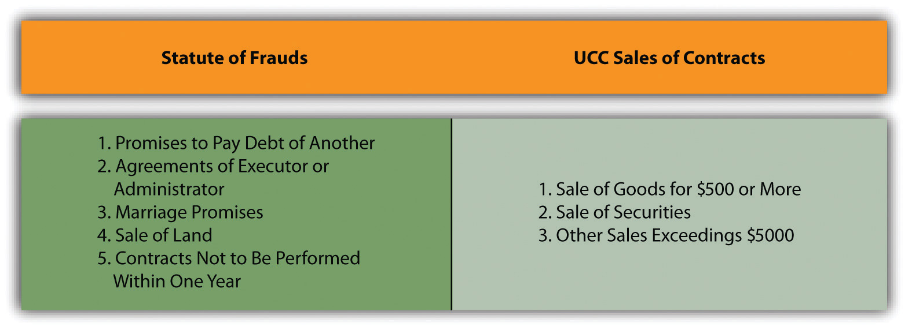

After reading this chapter, you should understand the following:
In four chapters, we have focused on the question of whether the parties created a valid contract and have examined the requirements of (1) agreement (offer and acceptance), (2) real consent (free will, knowledge, and capacity), (3) consideration, and (4) legality. Assuming that these requirements have been met, we now turn to the form and meaning of the contract itself. Does the contract have to be in a written form, and—if there is a dispute—what does the contract mean?
The general rule is this: a contract need not be in writing to be enforceable. An oral agreement to pay a high-fashion model $2 million to pose for photographs is as binding as if the language of the deal were printed on vellum and signed in the presence of twenty bishops. For three centuries, however, a large exception grew up around the Statute of Frauds, first enacted in England in 1677 under the formal name “An Act for the Prevention of Frauds and Perjuries.” The Statute of FraudsA rule requiring that certain contracts be evidenced by a writing, signed by the party to be bound, to be enforceable. requires that some contracts be evidenced by a writing, signed by the party to be bound. The English statute’s two sections dealing with contracts read as follows:
[Sect. 4]…no action shall be brought
unless the agreement upon which such action shall be brought, or some memorandum or note thereof, shall be in writing, and signed by the party to be charged therewith, or some other person thereunto by him lawfully authorized.
[Sect. 17]…no contract for the sale of any goods, wares and merchandizes, for the price of ten pounds sterling or upwards, shall be allowed to be good, except the buyer shall accept part of the goods so sold, and actually receive the same, or give something in earnest to bind the bargain or in part of payment, or that some note or memorandum in writing of the said bargain be made and signed by the parties to be charged by such contract, or their agents thereunto lawfully authorized.
As may be evident from the title of the act and its language, the general purpose of the law is to provide evidence, in areas of some complexity and importance, that a contract was actually made. To a lesser degree, the law serves to caution those about to enter a contract and “to create a climate in which parties often regard their agreements as tentative until there is a signed writing.”Restatement (Second) of Contracts, Chapter 5, statutory note. Notice, of course, that this is a statute; it is a legislative intrusion into the common law of contracts. The name of the act is somewhat unfortunate: insofar as it deals with fraud at all, it does not deal with fraud as we normally think of it. It tries to avoid the fraud that occurs when one person attempts to impose on another a contract that never was agreed to.
The Statute of Frauds has been enacted in form similar to the seventeenth-century act in every state but Maryland and New Mexico, where judicial decisions have given it legal effect, and Louisiana. With minor exceptions in Minnesota, Wisconsin, North Carolina, and Pennsylvania, the laws all embrace the same categories of contracts that are required to be in writing. Early in the twentieth century, Section 17 was replaced by a section of the Uniform Sales Act, and this in turn has now been replaced by provisions in the Uniform Commercial Code (UCC).
Figure 13.1 Contracts Required to Be in Writing
However ancient, the Statute of Frauds is alive and well in the United States. Today it is used as a technical defense in many contract actions, often with unfair results: it can be used by a person to wriggle out of an otherwise perfectly fine oral contract (it is said then to be used “as a sword instead of a shield”). Consequently, courts interpret the law strictly and over the years have enunciated a host of exceptions—making what appears to be simple quite complex. Indeed, after more than half a century of serious scholarly criticism, the British Parliament repealed most of the statute in 1954. As early as 1885, a British judge noted that “in the vast majority of cases [the statute’s] operation is simply to enable a man to break a promise with impunity because he did not write it down with sufficient formality.” A proponent of the repeal said on the floor of the House of Commons that “future students of law will, I hope, have their labours lightened by the passage of this measure.” In the United States, students have no such reprieve from the Statute of Frauds, to which we now turn for examination.
The rule: a promise to pay the debt of another person must be evidenced by some writing if it is a “collateral promiseA promise ancillary to an original promise, not made for the benefit of the party making it, that must be in writing to be enforceable. of suretyship (or ‘guaranty’).” A collateral promise is one secondary or ancillary to some other promise. A suretyOne who promises to act or pay upon the default of another: a guarantor. or guarantorOne who promises to pay or perform a contract obligation upon the default of another; a surety. (the terms are essentially synonymous) is one who promises to perform upon the default of another. Consider this:
A and B agree to pay C.
Here, both A and B are making a direct promise to pay C. Although A is listed first, both are promising to pay C. Now consider this:
B agrees to pay C if A does not.
Here it is clear that there must be another agreement somewhere for A to pay C, but that is not contained in this promise. Rather, B is making an agreement with C that is collateral—on the side—to the promise A is making to C. Sometimes the other agreement somewhere for A to pay C is actually in the same document as B’s promise to pay C if A does not. That does not make B’s promise a direct promise as opposed to a collateral one.
Suppose Lydia wishes to purchase on credit a coat at Miss Juliette’s Fine Furs. Juliette thinks Lydia’s creditworthiness is somewhat shaky. So Lydia’s friend Jessica promises Miss Juliette’s that if the store will extend Lydia credit, Jessica will pay whatever balance is due should Lydia default. Jessica is a surety for Lydia, and the agreement is subject to the Statute of Frauds; an oral promise will not be enforceable.Of course, if Jessica really did orally promise Miss Juliette’s to pay in case Lydia didn’t, it would be bad faith to lie about it. The proper course for Jessica is not to say, “Ha, ha, I promised, but it was only oral, so I’m not bound.” Jessica should say, “I raise the Statute of Frauds as a defense.” Suppose Jessica very much wants Lydia to have the coat, so she calls the store and says, “Send Lydia the fur, and I will pay for it.” This agreement does not create a suretyship, because Jessica is primarily liable: she is making a direct promise to pay. To fall within the Statute of Frauds, the surety must back the debt of another person to a third-party promisee (also known as the obligee of the principal debtor). The “debt,” incidentally, need not be a money obligation; it can be any contractual duty. If Lydia had promised to work as a cashier on Saturdays at Miss Juliette’s in return for the coat, Jessica could become surety to that obligation by agreeing to work in Lydia’s place if she failed to show up. Such a promise would need to be in writing to be enforceable.
The exception: the main purpose doctrineA promise to pay the debt of another need not be in writing to be enforceable if the promisor was motivated by a desire for advantage or benefit.. The main purpose doctrine is a major exception to the surety provision of the Statute of Frauds. It holds that if the promisor’s principal reason for acting as surety is to secure her own economic advantage, then the agreement is not bound by the Statute of Frauds writing requirement. Suppose, in the previous example, that Jessica is really the one who wants the fur coat but cannot, for reasons of prudence, let it be known that she has bought one. So she proposes that Lydia “buy” it for her and that she will guarantee Lydia’s payments. Since the main purpose of Jessica’s promise is to advance her own interests, an oral agreement is binding. Normally, the main purpose rule comes into play when the surety desires a financial advantage to herself that cannot occur unless she provides some security. For example, the board chairman of a small company, who also owns all the voting stock, might guarantee a printer that if his company defaulted in paying the bill for desperately needed catalogs, he would personally pay the bill. If his main purpose in giving the guarantee was to get the catalogues printed in order to stave off bankruptcy, and thus to preserve his own interest in the company, he would be bound by an oral agreement.Stuart Studio, Inc. v. National School of Heavy Equipment, Inc., 214 S.E.2d 192 (N.C. 1975). The same principle can be used to bind other creditors to oral agreements, as the bank discovered in Section 13.4.1 "The Statute of Frauds’ Main Purpose Doctrine" (Wilson Floors).
The rule: the promise by an executor or administrator of an estate to answer personally for the debt or other duty of the deceased is analogous to the surety provision—it must be evidenced by some writing if it is to be enforced over an objection by the would-be obligor. For an agreement to be covered by the statute, there must have been an obligation before the decedent’s death. Thus if the executor arranges for a funeral and guarantees payment should the estate fail to pay the fee, an oral contract is binding, because there was no preexisting obligation. If, however, the decedent has made his own arrangements and signed a note obligating his estate to pay, the executor’s promise to guarantee payment would be binding only if written.
The exception: the main purpose exception to the surety provision applies to this section of the Statute of Frauds as well as to the “promises to pay the debts of another” section, noted earlier.
The rule: if any part of the marriage or the promise to marry consists also of a promise to exchange some consideration, the Statute of Frauds requires that part to be evidenced by some writing.Restatement (Second) of Contracts, Section 125. Mutual promises to marry are not within the rule. John and Sally exchange promises to marry; the promise would not be unenforceable for failure to be evidenced by some writing. (Of course courts are very unlikely to force anybody to keep a promise to marry; the point is, the Statute of Frauds doesn’t apply). But if Sally understands John to say, “If you marry me, I will deed to you my property in the Catskill Mountains,” the part about the property would need to be evidenced by some writing to be enforced over John’s denial. The Statute of Frauds governs such promises regardless of who makes them. Suppose John’s father had said, “If you marry Sally and settle down, I will give you $1 million,” and John agrees and marries Sally. The father’s promise is not enforceable unless written, if he denies it.
Sometimes couples—especially rich people like movie stars—execute written property settlement agreements to satisfy the statute, stipulating how their assets will be treated upon marriage or upon divorce or death. If done before marriage, they are called prenuptial (premarital) agreementsA premarital agreement between parties concerning division or ownership of their property.; if after marriage, postnuptial (after marriage) agreementsAn agreement after marriage between spouses concerning division or ownership of their property. (“prenupts” and “postnupts” in lawyer lingo).
The exception: there is no “named” exception here, but courts are free to make equitable adjustments of property of the marriage to avoid an injustice.
The factors to be considered in the division of the marital estate are set forth at [Citation], which states, inter alia [among other things], that the court shall finally and equitably apportion the property of the parties, however and whenever acquired. The statute vests wide discretion in the district court. [Citation]. The court is free to adopt any reasonable valuation of marital property which is supported by the record.In re Marriage of Rada, 402, 869 P.2d 254 (Mont. 1994).
The rule: almost all contracts involving an interest in real estate are subject to the Statute of Frauds. “An interest in land” is a broad description, including the sale, mortgaging, and leasing of real property (including homes and buildings); profits from the land; the creation of easements; and the establishment of other interests through restrictive covenants and agreements concerning use. Short-term leases, usually for a term of one year or less, are exempt from the provision.
The exception: the part performance doctrineEquitable exception to Statute of Frauds dispensing with writing requirement when one party performed his or her part of the contract.. The name here is a misnomer, because it is a doctrine of reliance, and the acts taken in reliance on the contract are not necessarily partial performances under it. As in all such cases, the rationale is that it is unjust not to give the promisee specific performance if he or she acted in reasonable reliance on the contract and the promisor has continued to manifest assent to its terms. An oral contract to sell land is not binding simply because the buyer has paid the purchase price; payment is not by itself reliance, and if the seller refuses to transfer title, the buyer may recover the purchase price. However, if the buyer has taken possession and made improvements on the property, courts will usually say the case is out of the statute, and the party claiming an oral contract can attempt to prove the existence of the oral contract.
The rule: any agreement that cannot be performed within one year from its making must be evidenced by some writing to be enforceable. The purpose of this part is perhaps more obvious than most of the statute’s provisions: memories fade regarding the terms of oral contracts made long ago; people die; disputes are not uncommon. Notice the critical time frame is not how long it will take to perform the contract, but how long from the time it is made until performance is complete. If a contract is made on January 1 for a house to be constructed starting on June 1 and to be completed on February 1 of the next year, the performance will be completed in eight months from the time it was begun, but thirteen months from the time the contract was made. It falls within the statute.
The exception: the possibility testException to Statute of Frauds’ one-year rule: if at its making, a contract could have been performed in one year, no writing is required.. The statute’s one-year rule has been universally interpreted to mean a contract that is impossible to be fully performed within one year; if there is even the slightest chance of carrying out the agreement completely within the year, an oral contract is enforceable. Thus an oral agreement to pay a sum of money on a date thirteen months hence is within the statute and not enforceable, but one calling for payment “within thirteen months” would be enforceable, since it is possible under the latter contract to pay in less than a year. Because in many cases strict application of the statute would dictate harsh results, the courts often strain for an interpretation that finds it possible to perform the agreement within the year. Courts will even hold that because any person may die within the year, a contract without a fixed term may be fully performed in under a year and does not, therefore, fall within the statute.
The rule: contracts for the sale of goods in an amount greater than $500 must be evidenced by some writing to be enforceable. Section 2-201 of the UCC requires all contracts for the sale of goods for the price of $500 or more to be in writing, but oral agreements for the sale of goods valued at less than $500 are fully enforceable without exception.
In addition to these requirements, the UCC provides that agreements for the sale of securities (e.g., most stocks and bonds) usually need to be evidenced by a writing, and agreements for property not included in the sales or securities articles of the UCC that exceed $5,000 in value need to be so evidenced.Uniform Commercial Code, Sections 8-319 and 1-206. Included here would be intangible property such as rights to royalties and to mortgage payments, and other rights created by contract. And in many states, other statutes require a writing for several different kinds of contracts. These include agreements to pay commissions to real estate brokers, to make a will, to pay debts already discharged in bankruptcy, to arbitrate rather than litigate, to make loans, and to make installment contracts.
There are four exceptions to the UCC’s Statute of Frauds requirement that are relevant here.
This provides that, as between merchants, if an oral agreement is reached and one party sends the other a written statement confirming it, the other party has ten days to object in writing or the agreement is enforceable.Uniform Commercial Code, Section 2-201(2).
This exception provides that a seller who has manufactured goods to the buyer’s specifications or who has made “either a substantial beginning of their manufacture or commitments for their procurement” will not be stuck if the buyer repudiates, assuming that the goods are unsuitable for sale to others.Uniform Commercial Code, Section 2-201(3)(a).
This exception arises—reasonably enough—when the party against whom enforcement is sought admits in testimony or legal papers that a contract was in fact made.Uniform Commercial Code, Section 2-201(3)(b). However, the admission will not permit enforcement of all claimed terms of the contract; enforcement is limited to the quantity of goods admitted.
The UCC provides that an oral contract for goods in excess of $500 will be upheld if payment has already been made and accepted, or if the goods have been received and accepted.Uniform Commercial Code, Section 2-20l(3)(c).
We have been careful not to say “the contract needs to be in writing.” We have said, “a contractual intention must be evidenced by some writing, signed by the party to be bound.” A signed contract is not required. What is required in most states, following the wording of the original statute, is that there be at least some memorandum or note concerning the agreement—a logical consequence of the statute’s purpose to evidence the making of the contract. The words need not appear in a formal document; they are sufficient in any form in a will, or on a check or receipt, or in longhand on the back of an envelope—so long as the document is signed by the party to be charged (i.e., the party being sued on the contract).
Although the writing need not contain every term, it must recite the subject matter of the contract. It need not do so, however, in terms comprehensible to those who were not party to the negotiations; it is enough if it is understandable in context. A written agreement to buy a parcel of land is usually sufficiently definitive if it refers to the parcel in such a way that it could be mistaken for no other—for example, “seller’s land in Tuscaloosa,” assuming that the seller owned only one parcel there. Beyond the subject matter, the essential terms of promises to be performed must be written out; all details need not be. If an essential term is missing, it cannot be enforced, unless it can be inferred or imposed by rule of law. A written contract for the sale of land containing every term but the time for payment, which the parties orally agreed would be upon delivery of the deed, is sufficient. (A contract that omitted the selling price would not be.)
The parties must be named in the writing in a manner sufficient to identify them. Their whole names need not be given if initials or some other reference makes it inescapable that the writing does concern the actual parties. Reference to the agent of a party identifies the party. Possession of the writing may even be sufficient: if a seller gives a memorandum of an oral agreement for the sale of his land, stating all the terms, to the buyer, the latter may seek specific performance even though the writing omits to name or describe him or his agent.Restatement (Second) of Contracts, Section 207(f).
In a few states, consideration for the promise must be stated in writing, even if the consideration has already been given. Consequently, written contracts frequently contain such language as “for value received.” But in most states, failure to refer to consideration already given is unnecessary: “the prevailing view is that error or omission in the recital of past events does not affect the sufficiency of a memorandum.”Restatement (Second) of Contracts, Section 207(h). The situation is different, however, when the consideration is a return promise yet to be performed. Usually the return promise is an essential term of the agreement, and failure to state it will vitiate the writing.
In contracts for the sale of goods, the writing must be signed by the party to be charged, and the parties must be sufficiently identified.Uniform Commercial Code, Section 2-210(1). But consideration, including the selling price, need not be set forth for the memorandum to meet the requirements of the UCC (“a writing is not insufficient because it omits or incorrectly states a term agreed upon”), though obviously it makes sense to do so whenever possible. By contrast, UCC Sections 1-206 and 3-319 concerning intangible personal property and investment securities require “a defined or stated price.”
One of the primary purposes of the Electronic Signatures in Global and National Commerce Act, S. 761, popularly referred to as ESign, is to repeal state law requirements for written instruments as they apply to electronic agreements and to make almost anything reasonably indicative of a signature good enough electronically.Electronic Signatures in Global and National Commerce Act, 15 U.S.C. § 96, 106th Congress (2000). It provides the following:
Notwithstanding any statute, regulation, or other rule of law [other than subsequent parts of this same statute], with respect to any transactions in or affecting interstate or foreign commerce—
The term “transaction” means an action or set of actions relating to the conduct of a business, consumer or commercial affairs between two or more persons, including any of the following types of conduct—
The term “electronic signature” means an electronic sound, symbol, or process, attached to or logically associated with a contract or other record and executed or adopted by a person with the intent to sign the record.
The basic rule is that contracts governed by the Statute of Frauds are unenforceable if they are not sufficiently written down. If the agreement contains several promises, the unenforceability of one will generally render the others unenforceable also.
The Statute of Frauds can work injustices. In addition to the exceptions already noted, there are some general exceptions.
First, certainly, if the contract has been performed fully by both sides, its unenforceability under the statute is moot. Having fulfilled its function (neither side having repudiated the contract), the agreement cannot be rescinded on the ground that it should have been, but was not, reduced to writing.
Second, some relief may be granted to one who has relied on an oral contract to her detriment (similar to the part performance doctrine mentioned already). For a partially performed contract unenforceable under the Statute of Frauds, restitution may be available. Suppose George agrees orally to landscape Arthur’s fifteen acres, in return for which George is to receive title to one acre at the far end of the lot. George is not entitled to the acre if Arthur defaults, but he may recover for the reasonable value of the services he has performed up to the time of repudiation. Somewhat related, if one side has reasonably and foreseeably relied upon a promise in such a way that injustice can only be avoided by enforcing it, some courts will use promissory estoppel to preclude the necessity of a writing, but the connection between the alleged oral contract and the detrimental reliance must be convincing.
Third, most contracts required to be in writing may be rescinded orally. The new agreement is treated in effect as a modification of the old one, and since a complete rescission will not usually trigger any action the statute requires to be in writing, the rescission becomes effective in the absence of any signed memorandum.
Some agreements, however, may not be rescinded orally. Those that by their terms preclude oral rescission are an obvious class. Under the UCC, certain agreements for the sale of goods may not be orally rescinded, depending on the circumstances. For instance, if title has already passed to the buyer under a written agreement that satisfies the statute, the contract can be rescinded only by a writing. Contracts for the sale of land are another class of agreements that generally may not be orally rescinded. If title has already been transferred, or if there has been a material change of position in reliance on the contract, oral agreements to rescind are unenforceable. But a contract that remains wholly executory, even though enforceable because in writing, may be rescinded orally in most states.
Fourth, contracts governed by the Statute of Frauds may be modified orally if the resulting contract, taken as a whole, falls outside the statute. The same rule applies under the UCC.Uniform Commercial Code, Section 2-209(3). Thus a written contract for the sale of a new bicycle worth $1,200 may be orally modified by substituting the sale of a used bicycle worth $450, but not by substituting the sale of a used bike worth $600. The modified contract effectively rescinds the original contract.
The Statute of Frauds, an ancient legislative intrusion into common-law contracts, requires that certain contracts be evidenced by some writing, signed by the party to be bound, to be enforceable. Among those affected by the statute are contracts for an interest in real estate, contracts that by their terms cannot be performed within one year, contracts whereby one person agrees to pay the debt of another, contracts involving the exchange of consideration upon promise to marry (except mutual promises to marry), and, under the UCC, contracts in an amount greater than $500. For each contract affected by the statute, there are various exceptions intended to prevent the statute from being used to avoid oral contracts when it is very likely such were in fact made.
The writing need not be a contract; anything in writing, signed by the person to be bound, showing adequate contractual intention will take the matter out of the statute and allow a party to attempt to show the existence of the oral contract.
There may be relief under restitution or promissory estoppel. Contracts affected by the statute can usually be orally rescinded. Any contract can be modified or rescinded; if the new oral contract as modified does not fall within the statute, the statute does not apply.
Unlike Minerva sprung forth whole from the brow of Zeus in Greek mythology, contracts do not appear at a stroke memorialized on paper. Almost invariably, negotiations of some sort precede the concluding of a deal. People write letters, talk by telephone, meet face-to-face, send e-mails, and exchange thoughts and views about what they want and how they will reciprocate. They may even lie and cajole in duplicitous ways, making promises they know they cannot or will not keep in order not to kill the contract talks. In the course of these discussions, they may reach tentative agreements, some of which will ultimately be reflected in the final contract, some of which will be discarded along the way, and some of which perhaps will not be included in the final agreement but will nevertheless not be contradicted by it. Whether any weight should be given to these prior agreements is a problem that frequently arises.
The rule at common law is this: a written contract intended to be the parties’ complete understanding discharges all prior or contemporaneous promises, statements, or agreements that add to, vary, or conflict with it.
The parol evidence ruleUnder this rule, where there is a written contract, extrinsic (parol) evidence cannot usually change the express terms laid down in that document. (parol means oral; it is related to parliament and parly—talking) is a substantive rule of law that operates to bar the introduction of evidence intended to show that the parties had agreed to something different from what they finally arrived at and wrote down. It applies to prior written as well as oral discussions that don’t make it into the final written agreement. Though its many apparent exceptions make the rule seem difficult to apply, its purposes are simple: to give freedom to the parties to negotiate without fear of being held to the consequences of asserting preliminary positions, and to give finality to the contract.
The rule applies to all written contracts, whether or not the Statute of Frauds requires them to be in writing. The Statute of Frauds gets to whether there was a contract at all; the parol evidence rule says, granted there was a written contract, does it express the parties’ understanding? But the rule is concerned only with events that transpired before the contract in dispute was signed. It has no bearing on agreements reached subsequently that may alter the terms of an existing contract.
Despite its apparent stringency, the parol evidence rule does not negate all prior agreements or statements, nor preclude their use as evidence. A number of situations fall outside the scope of the rule and hence are not technically exceptions to it, so they are better phrased as exemptions (something not within the scope of a rule).
If the parties never intended the written contract to be their full understanding—if they intended it to be partly oral—then the rule does not apply. If the document is fully integrated, no extrinsic evidence will be permitted to modify the terms of the agreement, even if the modification is in addition to the existing terms, rather than a contradiction of them. If the contract is partially integrated, prior consistent additional terms may be shown. It is the duty of the party who wants to exclude the parol evidence to show the contract was intended to be integrated. That is not always an easy task. To prevent a party later from introducing extrinsic evidence to show that there were prior agreements, the contract itself can recite that there were none. Here, for example, is the final clause in the National Basketball Association Uniform Player Contract: “This agreement contains the entire agreement between the parties and there are no oral or written inducements, promises or agreements except as contained herein.” Such a clause is known as a merger clauseA contract term stating that the written agreement contains—merges—the parties’ full understanding and intent..
Parol evidence is admissible to show the existence of grounds that would cause the contract to be void. Such grounds include illegality, fraud, duress, mistake, and lack of consideration. And parol evidence is allowed to show evidence of lack of contractual capacity. Evidence of infancy, incompetency, and so on would not change the terms of the contract at all but would show it was voidable or void.
When the parties orally agree that a written contract is contingent on the occurrence of an event or some other condition (a condition precedentA term in a contract that something has to happen before the obligation to perform the contract ripens.), the contract is not integrated and the oral agreement may be introduced. The classic case is that of an inventor who sells in a written contract an interest in his invention. Orally, the inventor and the buyer agree that the contract is to take effect only if the buyer’s engineer approves the invention. (The contract was signed in advance of approval so that the parties would not need to meet again.) The engineer did not approve it, and in a suit for performance, the court permitted the evidence of the oral agreement because it showed “that in fact there never was any agreement at all.”Pym v. Campbell, 119 Eng. Rep. 903 (Q.B. 1856). Note that the oral condition does not contradict a term of the written contract; it negates it. The parol evidence rule will not permit evidence of an oral agreement that is inconsistent with a written term, for as to that term the contract is integrated.
The parol evidence rule does not prevent a showing that a fact stated in a contract is untrue. The rule deals with prior agreements; it cannot serve to choke off inquiry into the facts. Thus the parol evidence rule will not bar a showing that one of the parties is a minor, even if the contract recites that each party is over eighteen. Nor will it prevent a showing that a figure in the contract had a typographical error—for example, a recital that the rate charged will be the plumber’s “usual rate of $3 per hour” when both parties understood that the usual rate was in fact $30 per hour. A court would allow reformationThe correction of a contract containing errors. (correction) of such errors.
To enforce a contract, its terms must be understood, so parol evidence would be allowed, but a claim of ambiguity cannot be used to alter, vary, or change the contract’s meaning.
Ordinarily, an additional consistent oral term may be shown only if the contract was partially integrated. The parol evidence rule bars evidence of such a term if the contract was fully integrated. However, when there is additional consideration for the term orally agreed, it lies outside the scope of the integrated contractA contract that encompasses the parties’ full understanding. and may be introduced. In effect, the law treats each separate consideration as creating a new contract; the integrated written document does not undercut the separate oral agreement, as long as they are consistent. Buyer purchases Seller’s business on a contract; as part of the agreement, Seller agrees to stay on for three weeks to help Buyer “learn the ropes.” Buyer realizes she is not yet prepared to go on her own. She and Seller then agree that Seller will stay on as a salaried employee for five more weeks. Buyer cannot use the parol evidence rule to preclude evidence of the new agreement: it is a postcontract modification supported by new consideration. Similarly, parties could choose to rescind a previously made contract, and the parol evidence rule would not bar evidence of that.
Under Section 2-202 of the UCC, a course of dealing, a usage of trade, or a course of performance can be introduced as evidence to explain or supplement any written contract for the sale of goods. A course of dealingA pattern of behavior between parties showing how they intend their relationship to work. is defined as “a sequence of previous conduct between the parties to a particular transaction which is fairly to be regarded as establishing a common basis of understanding for interpreting their expressions and other conduct.” A usage of tradeCustomary way of doing business that may be used to inform the parties’ contractual intentions. is “any practice or method of dealing having such regularity of observance in a place, vocation or trade as to justify an expectation that it will be observed with respect to the transaction in question.” A course of performanceSystematic and uniform conduct in which parties engage after they enter into a contract. is the conduct of a party in response to a contract that calls for repeated action (e.g., a purchase agreement for a factory’s monthly output, or an undertaking to wash a neighbor’s car weekly).
The parol evidence rule is intended to preserve “the four corners” of the contract: it generally prohibits the introduction of contemporaneous oral or written elements of negotiation that did not get included in the written contract, subject to a number of exemptions.
The UCC allows evidence of course of dealing, course of performance, or usage of trade to give meaning to the contract.
As any reader knows, the meaning of words depends in part on context and in part on the skill and care of the writer. As Justice Oliver Wendell Holmes Jr. once succinctly noted, “A word is not a crystal, transparent and unchanged; it is the skin of a living thought and may vary greatly in color and content according to the circumstances and the time in which it is used.”Towne v. Eisner, 245 US 418, 425 (1917). Words and phrases can be ambiguous, either when they stand alone or when they take on a different coloration from words and phrases near them. A writer can be careless and contradict himself without intending to; people often read hurriedly and easily miss errors that a more deliberate perusal might catch. Interpretation difficulties can arise for any of a number of reasons: a form contract might contain language that is inconsistent with provisions specifically annexed; the parties might use jargon that is unclear; they might forget to incorporate a necessary term; assumptions about prior usage or performance, unknown to outsiders like judges, might color their understanding of the words they do use. Because ambiguities do arise, courts are frequently called on to give content to the words on paper.
Courts attempt to give meaning to the parties’ understanding when they wrote the contract.
The intention of the parties governs, and if their purpose in making the contract is known or can be ascertained from all the circumstances, it will be given great weight in determining the meaning of an obscure, murky, or ambiguous provision or a pattern of conduct. A father tells the college bookstore that in consideration of its supplying his daughter, a freshman, with books for the coming year, he will guarantee payment of up to $350. His daughter purchases books totaling $400 the first semester, and he pays the bill. Midway through the second semester, the bookstore presents him with a bill for an additional $100, and he pays that. At the end of the year, he refuses to pay a third bill for $150. A court could construe his conduct as indicating a purpose to ensure that his daughter had whatever books she needed, regardless of cost, and interpret the contract to hold him liable for the final bill.
The policy of uncovering purpose has led to a number of tools of judicial interpretation:
In this chapter, we have considered a set of generally technical legal rules that spell out the consequences of contracts that are wholly or partially oral or that, if written, are ambiguous or do not contain every term agreed upon. These rules fall within three general headings: the Statute of Frauds, the parol evidence rule, and the rules of interpretation. Obviously, the more attention paid to the contract before it is formally agreed to, the fewer the unforeseen consequences. In general, the conclusion is inescapable that a written contract will avoid a host of problems. Writing down an agreement is not always sensible or practical, but it can probably be done more often than it is. Writing almost fifty years ago—and it is still true—a law professor studying business practices noted the following:
Businessmen often prefer to rely on “a man’s word” in a brief letter, a handshake or “common honesty and decency”—even when the transaction involves exposure to serious risks. Seven lawyers from law firms with business practices were interviewed. Five thought that businessmen often entered contracts with only a minimal degree of advanced planning. They complained that businessmen desire to “keep it simple and avoid red tape” even where large amounts of money and significant risks are involved.…Another said that businessmen when bargaining often talk only in pleasant generalities, think they have a contract, but fail to reach agreement on any of the hard, unpleasant questions until forced to do so by a lawyer.Stewart Macaulay, “Non-contractual Relations in Business: A Preliminary Study,” American Sociological Review 28, no. 1 (1963): 58–59.
Written contracts do not, to be sure, guarantee escape from disputes and litigation. Sometimes ambiguities are not seen; sometimes they are necessary if the parties are to reach an agreement at all. Rather than back out of the deal, it may be worth the risk to one or both parties deliberately to go along with an ambiguous provision and hope that it never arises to be tested in a dispute that winds up in court.
Nevertheless, it is generally true that a written contract has at least three benefits over oral ones, even those that by law are not required to be in writing. (1) The written contract usually avoids ambiguity. (2) It can serve both as a communications device and as a device for the allocation of power, especially within large companies. By alerting various divisions to its formal requirements, the contract requires the sales, design, quality-control, and financial departments to work together. By setting forth requirements that the company must meet, it can place the power to take certain actions in the hands of one division or another. (3) Finally, should a dispute later arise, the written contract can immeasurably add to proof both of the fact that a contract was agreed to and of what its terms were.
It is not uncommon for the meaning of a contract to be less than entirely clear. When called upon to interpret the meaning of a contract, courts try to give it the meaning the parties intended when they made it. Various tools of interpretation are used.
Businesspeople usually do not like to seem overbearing; they do not wish to appear untrusting; they often dislike unpleasantries. Therefore it is not uncommon for even big deals to be sealed with a handshake. But it’s a trade-off, because a written contract has obvious benefits, too.
Wilson Floors Co. v. Sciota Park, Ltd., and Unit, Inc.
377 N.E.2d 514 (1978)
Sweeny, J.
In December of 1971, Wilson Floors Company (hereinafter “Wilson”) entered into a contract with Unit, Inc. (hereinafter “Unit”), a Texas corporation to furnish and install flooring materials for “The Cliffs” project, a development consisting of new apartments and an office building to be located in Columbus, Ohio. Unit…was the general manager for the project. The Pittsburgh National Bank (hereinafter the bank), as the construction lender for the project, held mortgages on The Cliffs property security for construction loans which the bank had made to Unit.
As the work progressed on the project Unit fell behind in making payments to Wilson for its completed work in the spring of 1973. At that time, the project was approximately two-thirds completed, the first mortgage money of seven million dollars having been fully dispersed by the bank to Unit. Appellant [Wilson] thereupon stopped work in May of 1973 and informed Unit that it would not continue until payments were forthcoming. On May 15, 1973, the bank conducted a meeting with the subcontractors in The Cliffs project, including Wilson.
At the meeting, the bank sought to determine whether it would be beneficial at that stage of the project to lend more money to Unit, foreclose on the mortgage and hire a new contractor to complete the work, or do nothing. Subcontractors were requested to furnish the bank an itemized account of what Unit owed them, and a cost estimate of future services necessary to complete their job contracts. Having reviewed the alternatives, the bank determined that it would be in its best interest to provide additional financing for the project. The bank reasoned that to foreclose on the mortgage and hire a new contractor at this stage of construction would result in higher costs.
There is conflicting testimony in regard to whether the bank made assurances to Wilson at this meeting that it would be paid for all work to be rendered on the project. However, after the May meeting, Wilson, along with the other subcontractors, did return to work.
Payments from Unit again were not forthcoming, resulting in a second work stoppage. The bank then arranged another meeting to be conducted on June 28, 1973.
At this second meeting, there is conflicting testimony concerning the import of the statements made by the bank representative to the subcontractors. The bank representative who spoke at the meeting testified at trial that he had merely advised the subcontractors that adequate funds would be available to complete the job. However, two representatives of Wilson, also in attendance at the meeting, testified that the bank representative had assured Wilson that if it returned to work, it would be paid.
After the meeting, Wilson returned to work and continued to submit its progress billings to Unit for payment. Upon completion of its portion of The Cliffs project, Wilson submitted its final invoice of $15,584.50 to Unit. This amount was adjusted downward to $15,443.06 upon agreement of Unit and Wilson. However, Wilson was not paid this amount.
As a result of nonpayment, Wilson filed suit…against Unit and the bank to recover the $15,443.06 [about $60,700 in 2010 dollars]. On September 26, 1975, Wilson and Unit stipulated that judgment for the sum of $15,365.84, plus interest, be entered against Unit. When Unit failed to satisfy the judgment, appellant proceeded with its action against the bank. [The trial court decided in favor of Wilson, but the intermediate appellate court reversed the trial court decision.]…[The Ohio statute of frauds provides]:
No action shall be brought whereby to charge the defendant, upon a special promise, to answer for the debt, default, or miscarriage of another person…unless the agreement…or some memorandum thereof, is in writing and signed by the party to be charged.…
In paragraph one of Crawford v. Edison [an 1887 Ohio case], however, this court stated:
When the leading object of the promisor is, not to answer for another, but to subserve some pecuniary or business purpose of his own, involving a benefit to himself…his promise is not within the statute of frauds, although it may be in form a promise to pay the debt of another and its performance may incidentally have the effect of extinguishing that liability.…
So long as the promisor undertakes to pay the subcontractor whatever his services are worth irrespective of what he may owe the general contractor and so long as the main purpose of the promisor is to further his own business or pecuniary interest, the promise is enforceable.…
The facts in the instant case reflect that the bank made its guarantee to Wilson to subserve its own business interest of reducing costs to complete the project. Clearly, the bank induced Wilson to remain on the job and rely on its credit for future payments. To apply the statute of frauds and hold that the bank had no contractual duty to Wilson despite its oral guarantees would not prevent the wrong which the statute’s enactment was to prevent, but would in reality effectuate a wrong.
Therefore, this court affirms the finding of the Court of Common Pleas that the verbal agreement made by the bank is enforceable by Wilson, and reverses the judgment of the Court of Appeals.
Iacono v. Lyons
16 S.W.3d 92 (Texas Ct. App. 2000)
O’Connor, J.
Mary Iacono, the plaintiff below and appellant here, appeals from a take-nothing summary judgment rendered in favor of Carolyn Lyons, the defendant below and appellee here. We reverse and remand.
The plaintiff [Iacono] and defendant [Lyons] had been friends for almost 35 years. In late 1996, the defendant invited the plaintiff to join her on a trip to Las Vegas, Nevada. There is no dispute that the defendant paid all the expenses for the trip, including providing money for gambling.
The plaintiff contended she was invited to Las Vegas by the defendant because the defendant thought the plaintiff was lucky. Sometime before the trip, the plaintiff had a dream about winning on a Las Vegas slot machine. The plaintiff’s dream convinced her to go to Las Vegas, and she accepted the defendant’s offer to split “50-50” any gambling winnings.
In February 1997, the plaintiff and defendant went to Las Vegas. They started playing the slot machines at Caesar’s Palace. The plaintiff contends that, after losing $47, the defendant wanted to leave to see a show. The plaintiff begged the defendant to stay, and the defendant agreed on the condition that she (the defendant) put the coins into the machines because doing so took the plaintiff too long. (The plaintiff, who suffers from advanced rheumatoid arthritis, was in a wheelchair.) The plaintiff agreed, and took the defendant to a dollar slot machine that looked like the machine in her dream. The machine did not pay on the first try. The plaintiff then said, “Just one more time,” and the defendant looked at the plaintiff and said, “This one’s for you, Puddin.”
The slot machine paid $1,908,064. The defendant refused to share the winnings with the plaintiff, and denied they had an agreement to split any winnings. The defendant told Caesar’s Palace she was the sole winner and to pay her all the winnings.
The plaintiff sued the defendant for breach of contract. The defendant moved for summary judgment on the grounds that any oral agreement was unenforceable under the statute of frauds or was voidable for lack of consideration. The trial court rendered summary judgment in favor of the defendant.…
[Regarding the “consideration” argument:] The defendant asserted the agreement, if any, was voidable because there was no consideration. The defendant contended the plaintiff’s only contribution was the plaintiff’s dream of success in Las Vegas and her “luck.” The plaintiff asserted the defendant bargained with her to go to Las Vegas in return for intangibles that the defendant thought the plaintiff offered (good luck and the realization of the dream). The plaintiff said she gave up her right to remain in Houston in return for the agreement to split any winnings. The plaintiff also asserted the agreement was an exchange of promises.
…The plaintiff alleged she promised to share one-half of her winnings with the defendant in exchange for the defendant’s promise to share one-half of her winnings with the plaintiff. These promises, if made, represent the respective benefits and detriments, or the bargained for exchange, necessary to satisfy the consideration requirement. See [Citation] (when no other consideration is shown, mutual obligations by the parties to the agreement will furnish sufficient consideration to constitute a binding contract).…[Regarding the Statute of Frauds argument:] The defendant asserted the agreement, if any, was unenforceable under the statute of frauds because it could not be performed within one year. There is no dispute that the winnings were to be paid over a period of 20 years.…
[The statute] does not apply if the contract, from its terms, could possibly be performed within a year—however improbable performance within one year may be. [Citations] [It bars] only oral contracts that cannot be completed within one year. [Citation] (If the agreement, either by its terms or by the nature of the required acts, cannot be performed within one year, it falls within the statute of frauds and must be in writing).
To determine the applicability of the statute of frauds with indefinite contracts, this Court may use any reasonably clear method of ascertaining the intended length of performance. [Citation] The method is used to determine the parties’ intentions at the time of contracting. The fact that the entire performance within one year is not required, or expected, will not bring an agreement within the statute. See [Citations].
Assuming without deciding that the parties agreed to share their gambling winnings, such an agreement possibly could have been performed within one year. For example, if the plaintiff and defendant had won $200, they probably would have received all the money in one pay-out and could have split the winnings immediately. Therefore, the defendant was not entitled to summary judgment based on her affirmative defense of the statute of frauds.
We reverse the trial court’s judgment and remand for further proceedings.
Hampden Real Estate, Inc. v. Metropolitan Management Group, Inc.
142 Fed. Appx. 600 (Fed. Ct. App. Pa. 2005)
Cowen, J.
[The court has jurisdiction based on diversity of citizenship.]
Hampden Real Estate sold Metropolitan Management a residential property pursuant to an Agreement of Sale (the “Sale Agreement”). The Sale Agreement provided that the property would be sold for $3.7 million, that Metropolitan would assume Hampden’s mortgage on the building, and that Hampden would receive a credit in the amount of $120,549.78—the amount being held in escrow pursuant to the mortgage (the “Escrow Account Credit”).
Between the execution of the Sale Agreement and the closing, the parties negotiated certain adjustments to the purchase price to compensate for required repairs. During these negotiations, the parties reviewed a draft and final Settlement Statement (the “Settlement Statement”), prepared by the closing agent, which did not list the Escrow Account Credit among the various debits and credits. A few weeks after the closing, Hampden demanded payment of the Escrow Account Credit.
Following Metropolitan’s refusal to pay the Escrow Account Credit, Hampden filed a complaint claiming breach of contract, unjust enrichment, and conversion. Metropolitan brought counterclaims for breach of contract, unjust enrichment, and fraudulent or negligent misrepresentation. Hampden brought a partial motion for summary judgment as to the breach of contract claim, which was granted and its unjust enrichment and conversion claims were dismissed as moot.…
The District Court correctly determined that the threshold issue is the role of the Settlement Statement, “based on both the intent of the parties and the custom and usage of the document.” However, the Court refused to consider extrinsic or parol evidence to determine the intent of the parties, reasoning that the parol evidence rule precluded such consideration absent ambiguity in the written contract. We find that the District Court misapplied the rule. The parol evidence rule seeks to preserve the integrity of written agreements by precluding the introduction of contemporaneous or prior declarations to alter the meaning of written agreements. [Citation] The rule does not apply, however, where a party seeks to introduce evidence of subsequent oral modifications. See [Citation:] a “written agreement may be modified by a subsequent written or oral agreement and this modification may be shown by writings or by words or by conduct or by all three. In such a situation the parol evidence rule is inapplicable.” Here, the parol evidence rule does not preclude testimony regarding the parties’ intention to alter the final purchase price by executing a Settlement Statement, after the execution of the Sale Agreement, which omitted the Escrow Account Credit.
The cases cited by Hampden are not to the contrary as each involved the admissibility of prior negotiations to demonstrate misrepresentations made in the inducement of the contract. As example, the court in [Citation], held that “[i]f a party contends that a writing is not an accurate expression of the agreement between the parties, and that certain provisions were omitted therefrom, the parol evidence rule does not apply.” (Permitting the introduction of parol evidence to establish that the contract omitted provisions which appellees represented would be included in the writing).…
The District Court further held that the integration clause contained in the written contract supports the conclusion that the Settlement Statement, which mentioned neither the Escrow Account Credit nor that it was amending the Sale Agreement, is not a modification of the Sale Agreement. The Court explained that the outcome might be different if the Settlement Statement mentioned “the escrow credit but provided different details, but as the [Settlement Statement] in this case simply ignored the escrow credit, and both parties agree that there were no oral discussions regarding the escrow credit, the [Settlement Statement] cannot be said to modify the escrow credit provision in the Agreement of Sale.” We disagree.
It is well-settled law in Pennsylvania that a “written contract which is not for the sale of goods may be modified orally, even when the contract provides that modifications may only be made in writing.” [Citition] “The modification may be accomplished either by words or conduct,” [Citation] demonstrating that the parties intended to waive the requirement that amendments be made in writing. [Citation] An oral modification of a written contract must be proven by “clear, precise and convincing evidence.” [Citation] Viewing the evidence in the light most favorable to Metropolitan, we find that the District Court erred in concluding that there was insufficient evidence in the record to raise a genuine issue of material fact as to whether the parties intended to orally modify the Sale Agreement. Metropolitan introduced a Settlement Statement which omitted the Escrow Account Credit, while listing all other debits and credits and submitted an affidavit from its President who “reviewed the Draft Settlement Statement and understood that the Escrow Account Credit had been omitted as part of the ongoing negotiations between the parties concerning the amount of the credit to which Metropolitan was entitled” due to the poor condition of the property.
Accordingly, the District Court erred in granting summary judgment in favor of Hampden. At a minimum, there was a triable issue of fact concerning whether the Settlement Statement was intended to modify the prior written Sale Agreement and serve as the final and binding manifestation of the purchase price. Specifically, whether the parties intended to exclude the Escrow Account Credit from the purchase price as part of the negotiations to address Hampden’s failure to maintain the property.
[Reversed and remanded.]
In an economic system mostly governed by contract, parties may not only make the kinds of deals they wish but may make them in any form they wish—with some significant exceptions. The most significant issue of form in contract law is whether the contract must be written or may be oral and still be enforceable. The question can be answered by paying close attention to the Statute of Frauds and court decisions interpreting it. In general, as we have seen, the following types of contracts must be in writing: interests in real property, promises to pay the debt of another, certain agreements of executors and administrators, performances that cannot be completed within one year, sale of goods for $500 or more, and sale of securities. There are exceptions to all these rules.
Another significant rule that permeates contract law is the parol evidence rule: prior statements, agreements, or promises, whether oral or written, made during the negotiation process are often discharged by a subsequent written agreement. No matter what you were promised before you signed on the dotted line, you are stuck if you sign an integrated agreement without the promise. Again, of course, exceptions lie in wait for the unwary: Is the agreement only partially integrated? Are there grounds to invalidate the entire agreement? Is the contract subject to an oral condition? Is a fact recited in the contract untrue?
Contracts are not always clear and straightforward. Often they are murky and ambiguous. Interpreting them when the parties disagree is for the courts. To aid them in the task, the courts over the years have developed a series of guidelines such as these: Does the agreement have a plain meaning on its face? If there is an ambiguity, against whom should it be construed? Are there usages of trade or courses of dealing or performance that would help explain the terms?
As a general rule
An exception to the UCC Statute of Frauds provision is
Rules that require certain contracts to be in writing are found in
The parol evidence rule
A merger clause